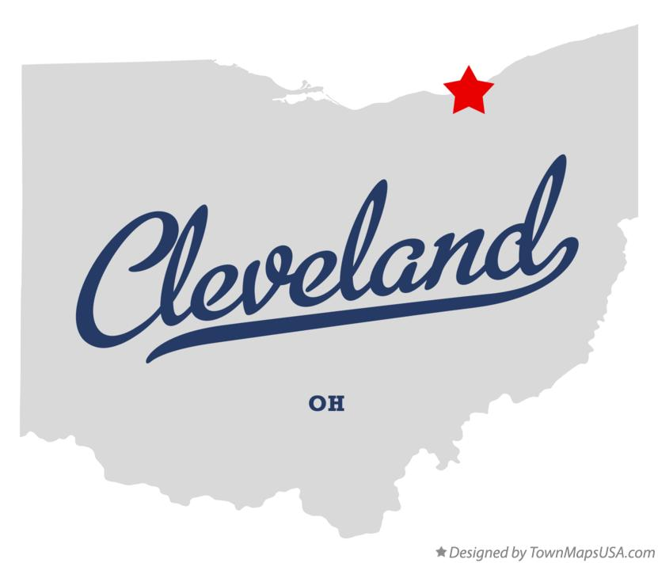

Cleveland, The Rock and Roll Capital of the World
"Designated as a global city by the Globalization and World Cities Research Network, Cleveland is home to several major cultural institutions, including the Cleveland Museum of Art, the Cleveland Museum of Natural History, the Cleveland Orchestra, the Cleveland Public Library, Playhouse Square, and the Rock and Roll Hall of Fame, as well as Case Western Reserve University. Known as "The Forest City" among many other nicknames, Cleveland serves as the center of the Cleveland Metroparks nature reserve system. The city's major league professional sports teams include the Cleveland Browns (NFL), the Cleveland Cavaliers (NBA), and the Cleveland Guardians (MLB). " - Wikipedia
Data
| Population | Classification | Region | Median Income | Year of Incorporation |
|---|---|---|---|---|
| 372,624 | Urban | Northern Ohio | Ohio: 35,981 | Cleveland: 25,325 (70%) | 1836 |
- Rock & Roll Hall of Fame
- Cleveland Museum of Art
- House from A Christmas Story